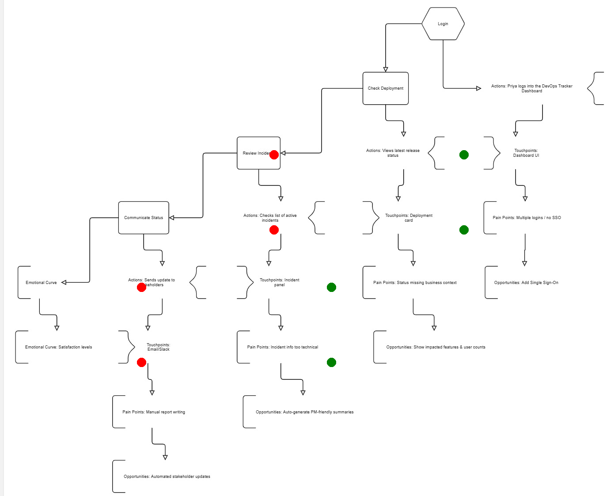
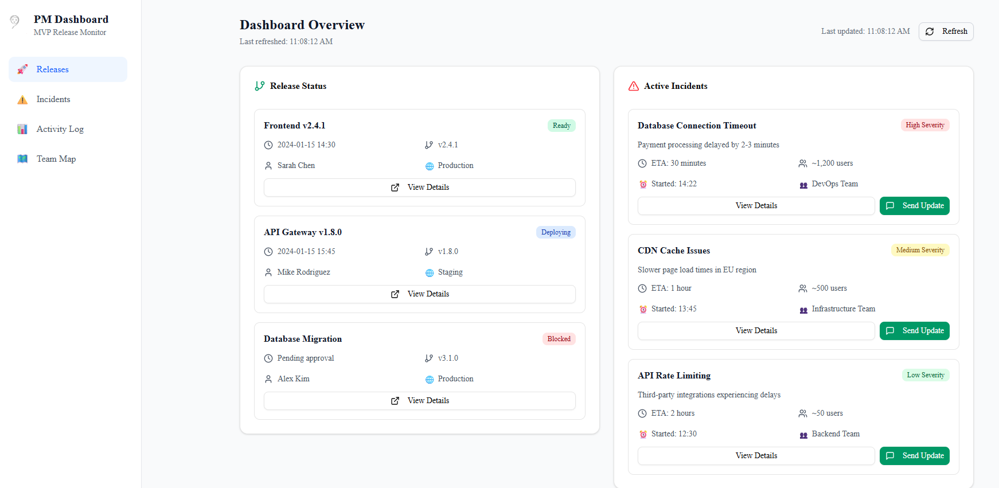
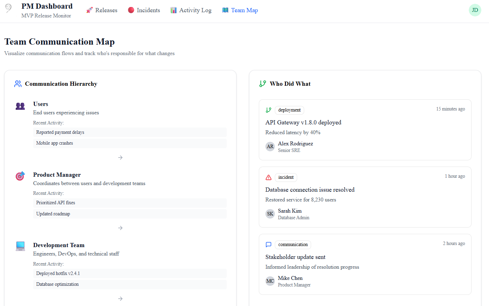
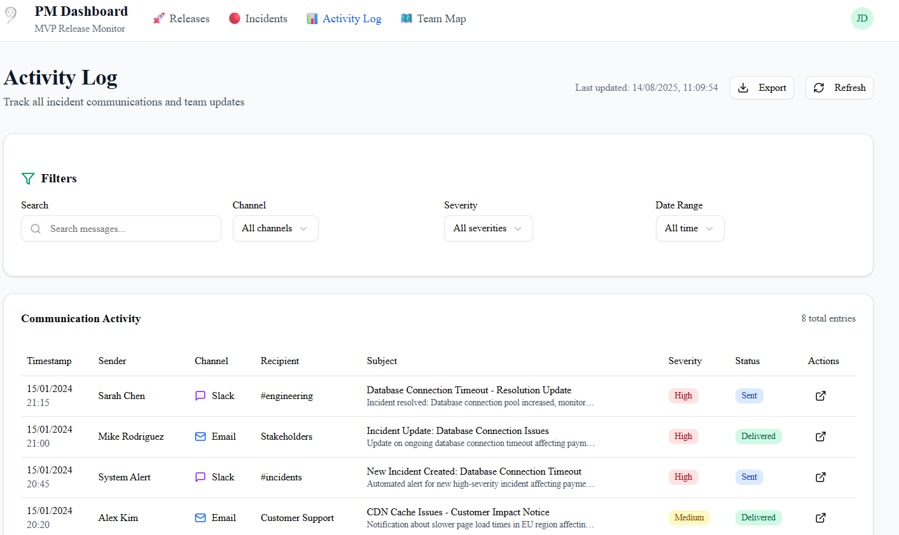

A PM-friendly DevOps Tracker Dashboard that helps non-technical stakeholders understand releases and incidents quickly. The solution transforms complex technical data into actionable insights for product managers.
Persona: Pooja - PM, Core Platform
Goal: Check deployment readiness & incident impact in preparation for stakeholder meetings
Status information scattered across Slack, Jira, GitHub, and various monitoring tools
Complex technical language that doesn't translate to business impact or user experience
Time-consuming manual communication and repetitive status update requests
Auto-generate PM-friendly summaries and business impact assessments
Single dashboard showing deployment status, incidents, and team communication flows
One-click stakeholder updates with business context and impact metrics
Complete user journey mapping from login to stakeholder communication, identifying pain points (red indicators) and success opportunities (green indicators)
Key Insights: Multiple decision points create friction - Review Incident, Check Deployment, Communicate Status. The workflow shows emotional curve satisfaction levels and touchpoints for improvement.
Main dashboard providing real-time visibility into system health, deployment status, and incident management with PM-friendly language
Features: Release tracking (Frontend v2.4.1 Ready, API Gateway v1.8.0 Deploying), Active incidents with severity levels, and real-time system status in one unified view
Visual representation of team hierarchy and communication flows for better coordination and responsibility tracking
Key Components: Communication hierarchy (Users → Product Manager → Development Team), "Who Did What" activity feed showing recent deployments and incidents, and team responsibility mapping
Comprehensive activity tracking with filtering capabilities for complete incident visibility and stakeholder communication
Advanced Features: Search and filter by channel, severity, and date range. Detailed communication log with timestamps, senders, recipients, and delivery status for complete audit trail
Made by Pooja Patel